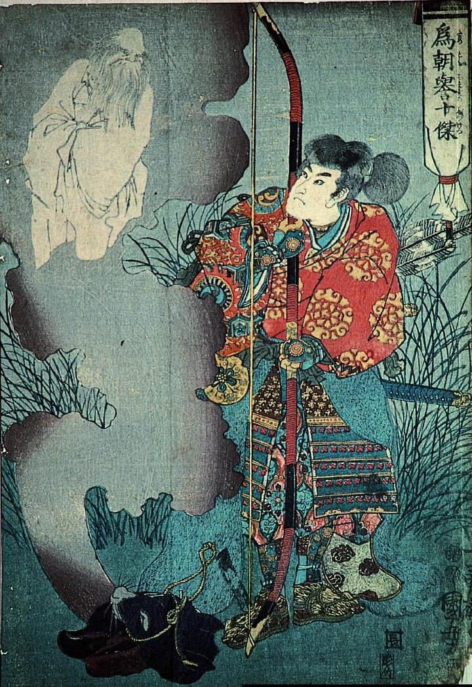

← 图鉴索引

牛の皮から出現した老人の霊。ひげを蓄え、腕組みしている。足は描かれていない。
著作者：歌川国芳／出典：親書誌：A5_pushkin_0006：為朝誉十傑；タメトモホマレノジュッケツ／日付：2011／資源識別子：A5_pushkin_0006_0001_0000
Copyright (c)2010- International Research Center for Japanese Studies, Kyoto, Japan. All rights reserved.